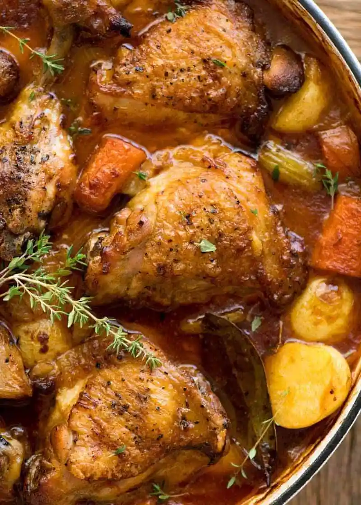

Ingedients
- 2 Ibs chicken thighs
- 3 tomatoes
- 1 red bell pepper
- 1 habanero pepper use 1/2 if you don't want it too spicy
- 1/2 cup Olive oil
- 1 cup chicken stock (broth)
- 1 onions
- 1 teaspoon bouillon powder
- thyme in desired quantity
- Black pepper
- Curry Powder
- Curry powder
- Salt
Instructions
- Wash and pat dry the chicken
- Rub the chicken thigh with salt and black pepper, and leave them in a bowl
- Heat olive oil in a pan
- Brown the Chicken of each side (about 10mins each)
- Cut the onions into two and chop one part into small pieces
- When the chicken is done. take it out and set it aside
- Blend the tomatoes, red bell pepper, habanero pepper, and the other half of the onion.
- Saute the choppped onion in the oil till translucent
- Pour the blended tomato and pepper mix and boil for 5mins
- Add chicken, stock, bouillon, curry and thyme
- Taste for salt and add more if necessary
- Cook for 20mins or until chicken is done